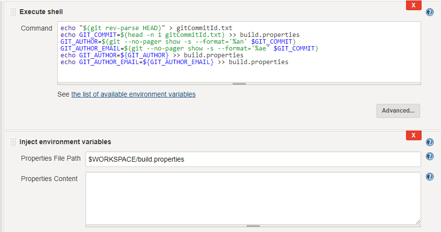
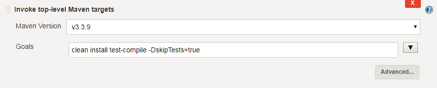
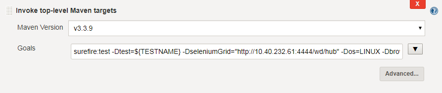
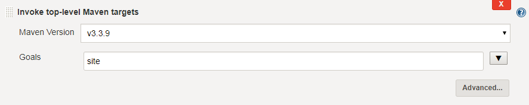
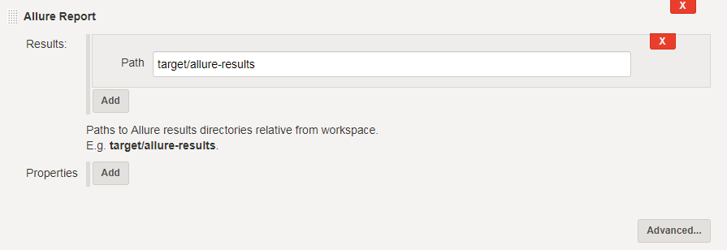
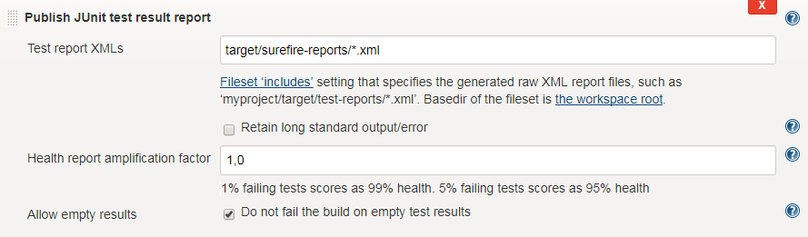
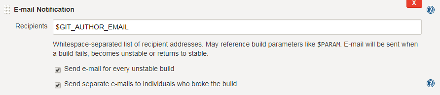

Overview
There are two ways to set up your Continuous Integration environment:
-
Create a Jenkins instance from scratch (e.g. by using the Jenkins Docker image)
Using a clean Jenkins instance requires the installation of additional plugins. The plugins required and their versions can be found on this page.
-
Use thre pre-configured custom Docker image provided by us
No more additional configuration is required (but optional) using this custom Docker image. Additionally, this Jenkins setup allows dynamical scaling across multiple machines and even cloud (AWS, Azure, Google Cloud etc.).
Jenkins Overview
Jenkins is an Open Source Continuous Integration Tool. It allows the user to create automated build jobs which will run remotely on so called Jenkins Slaves. A build job can be triggered by several events, for example on new pull request on specified repositories or timed (e.g. at midnight).
Jenking Configuration
Tests created by using the testing framework can easily be implemented on a Jenkins instance. The following chapter will describe such a job configuration. If you’re running your own Jenkins instance, you may have to install additional plugins listed on the page Jenkins Plugins for a trouble-free integration of your tests.
== Initial Configuration
The test job is configured as a so-called parameterized job. This means, after starting the job, parameters can be specified, which will then be used in the build process. In this case, branch and testname will be expected when starting the job. These parameters specify which branch in the code repository should be checked out (possibly feature branch) and the name of the test that should be executed.
== Build Process Configuration
-
The first step inside the build process configuration is to get the author of the commit that was made. The mail will be extracted and gets stored in a file called build.properties. This way, the author can be notified if the build fails.
 -
Next up, Maven will be used to check if the code can be compiled, without running any tests.
After making sure that the code can be compiled, the actual tests will be executed.
 -
Finally, reports will be generated.

== Post Build Configuration
-
At first, the results will be imported to the Allure System
 -
JUnit test results will be reported as well. Using this step, the test result trend graph will be displayed on the Jenkins job overview.
 -
Finally, an E-Mail will be sent to the previously extracted author of the commit.

Using the Pre-Configured Custom Docker Image
If you are starting a new Jenkins instance for your tests, we’d suggest using the pre-configured Docker image. This image already contains all the configurations and additional features.
The configurations are e.g. Plugins and Pre-Installed job setup samples. This way, you don’t have to set up the entire CI-Environment from the ground up.
Additional features from this docker image allow dynamic creation and deletion of Jenkins slaves, by creating Docker containers. Also, Cloud Solutions can be implemented to allow wide-spread load balancing.